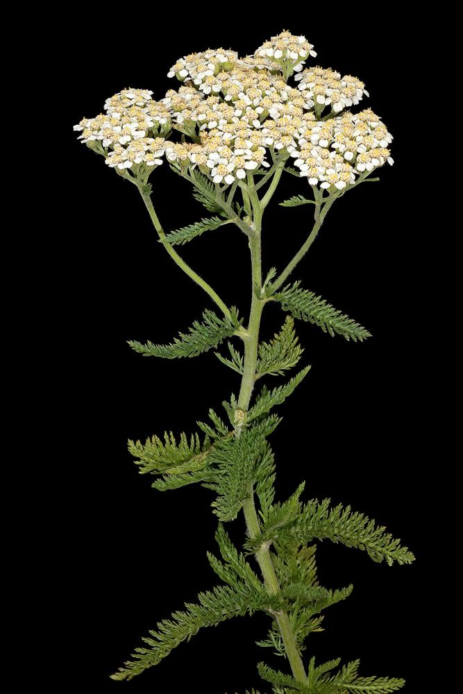

All 10 herbs / 5 of 10
How to grow yarrow from seed
Feathery leaves, flat white flower heads, and a plant that thrives on neglect.
EasyPerennialAchillea millefolium · soldier’s woundwort · Daisy family (Asteraceae)

At a glance
- Life cycle
- Perennial, zones 3–9
- Difficulty
- Easy
- Sun
- Full sun
- Soil
- Poor to average, well-drained — rich soil makes it floppy
- Sowing depth
- Surface-sow and press in — the seeds need light to germinate
- Germination
- 10–14 days at 64–75°F (18–24°C)
- When to sow
- Indoors 6–8 weeks before last frost, or direct sow after frost
- Spacing
- 12–18 in (30–45 cm)
- Height
- 2–3 ft (60–90 cm)
- Flowers
- Late in the first summer if started early; fully from year two
Step by step
- Fill a tray with moist seed mix, sprinkle the tiny seeds on top and press them in. Do not cover them.
- Keep the tray warm and in bright light. Seedlings appear in about two weeks.
- Plant out after the last frost, 12–18 inches apart, in the poorest sunny spot you have.
- Yarrow spreads by underground runners. Divide the clump every two or three years to keep it tidy.
Watering
Low. Water seedlings and new transplants; established plants need water only in extreme drought.
Growing in pots
Grows well in a 10–12 in (25–30 cm) pot with good drainage.
Feeding
None. Rich soil makes it tall and floppy.
Problems and fixes
- Flopping stems — lean soil, and cut back by half after the first flowers.
- Powdery mildew in humid shade — more sun and air.
- Spreading into neighbours — divide the clump every 2–3 years.
Harvest and drying
Cut flower stems when the flower heads are fully open. Hang them upside down in bundles in a dry, shady place.
Storing
Dried flower heads and leaves in a sealed jar; use within a year.
Saving seed
Let a few heads turn brown on the plant and shake the seed into a paper bag.
A bit of history
The genus is named after Achilles, who in Greek legend used the plant on his soldiers’ wounds. Old English names like “soldier’s woundwort” and “nosebleed plant” come from the same battlefield folklore.
Traditional uses on this site are history, not medical advice. Before using any herb, talk to a doctor or pharmacist — especially if you are pregnant, nursing, taking medication, or allergic to plants in the daisy family (Asteraceae), which includes seven of the ten herbs here.
Only want yarrow? A single organic packet from Strictly Medicinal Seeds is $5.14 (200 seeds).